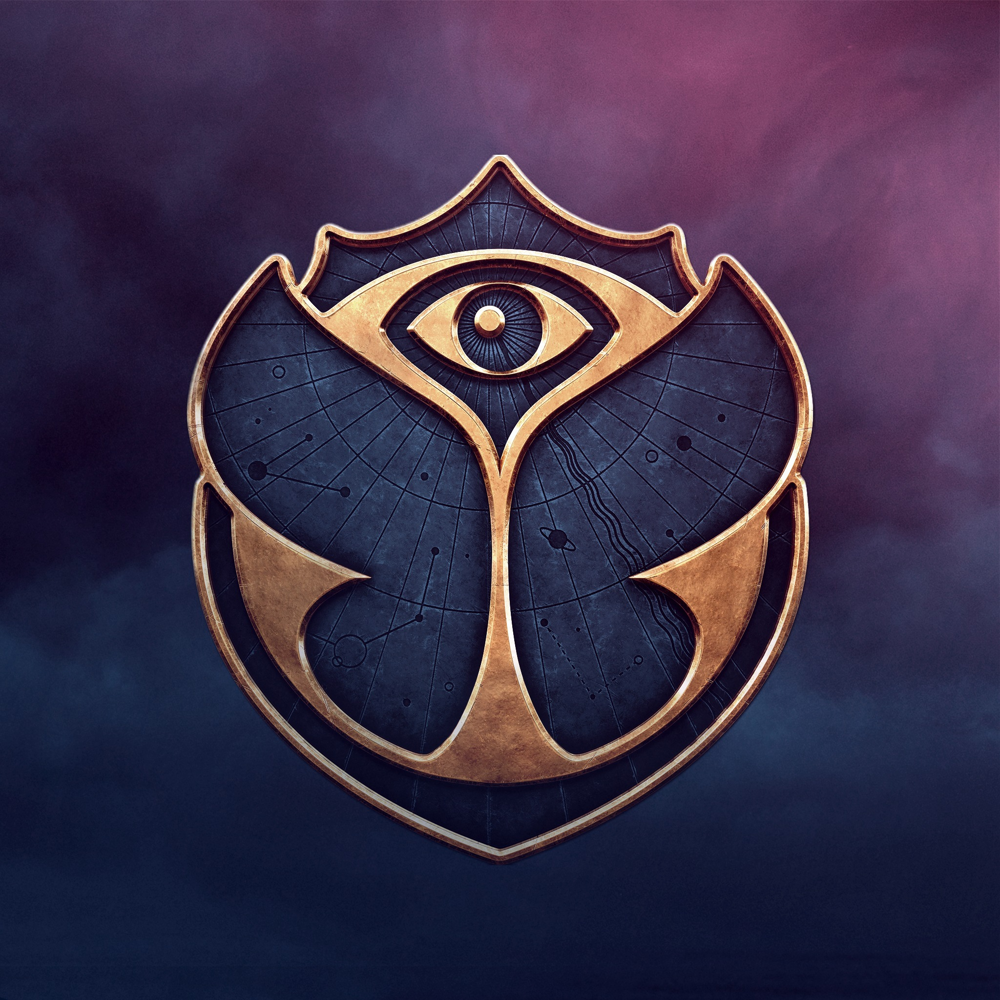

¿Quien es Frank Ocean?
Christopher Francis Ocean, conocido como Frank Ocean, es un cantautor, actor, director, diseñador y empresario estadounidense nacido en Long Beach, California el 28 de octubre de 1987. Es considerado por amplios medios artísticos como uno de los mejores artistas de la década de 2010. Genio musical, sus obras han sido alabadas universalmente por la crítica especializada por presentar estilos vanguardistas y letras elípticas e introspectivas. Frank Ocean ha ganado dos premios Grammy y un Brit Award como solista masculino internacional, entre otros reconocimientos, y sus dos álbumes de estudio han sido incluidos en la lista de la revista Rolling Stone de los 500 mejores álbumes de todos los tiempos (2020), influenciando y revolucionando géneros como el R&B, hip-hop, avant-garde, avant soul hasta el pop experimental.
La música de Frank ha sido descrita por escritores musicales como ecléctica en estilo. Sus composiciones suelen ser midtempos, y cuentan con melodías no convencionales que de vez en cuando tienen una estructura de música experimental. Sus escrituras abarcan temas como el amor, la nostalgia, las addiciones, la libertad y demas temas de profundidad que conectan con sus oyentes. Tambien tratan mucho sobre su vida, su personalidad, su amor por los autos y su sexualidad.
Albumes:


Proximos Recitales:


Tomorrowland
Consegui tus entradas!